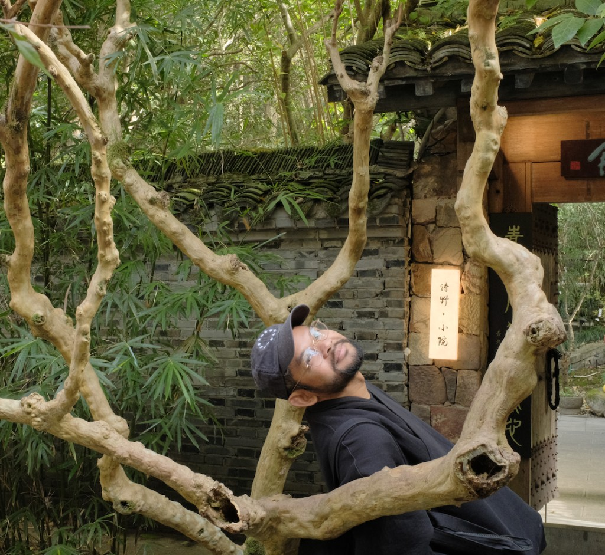
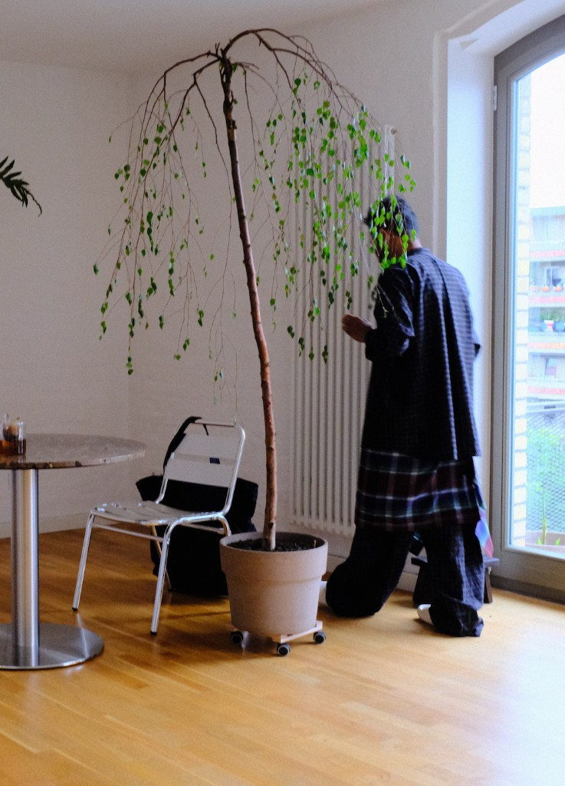

Mal Som works at the intersection of design and engineering — most at ease when he is closing the gap between the two.
Over the past decade he has shipped motion design systems at scale, built generative pipelines, and written the code that brought the designs to life.
His work favors systems that are honest about what they do — and simple enough not to get in the way.

Mal decides which experiment to craft by following hints of excitement. When several directions seem captivating, he may pursue more than one at a time.
For him, the craft is not only a building up — it is also a breaking down. He chooses which details to remove so that more energy can reach the core elements.

Mal Som is an artist made in Cambodia, planted in LA, and currently based in Berlin. Growing up in the US as a first generation Cambodian with Buddhist upbringings, his personal philosophies have married ancient Eastern views with modern Western pop-culture beliefs. This has touched all aspects of his work.